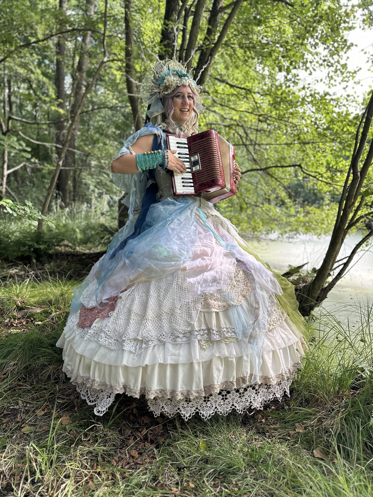
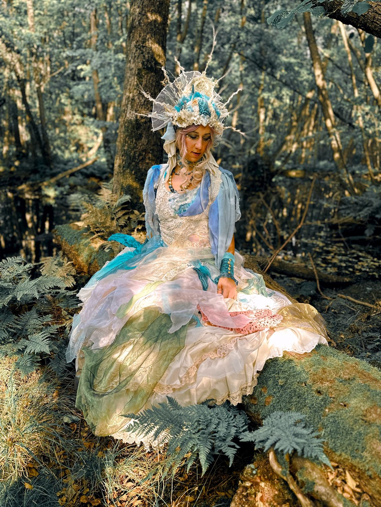
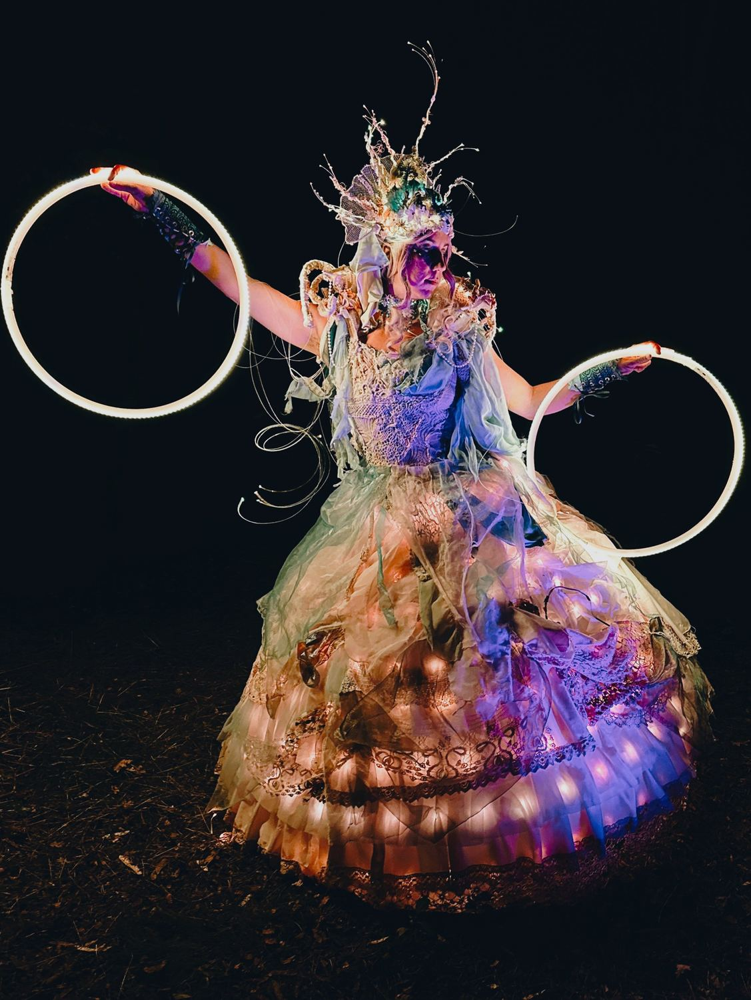
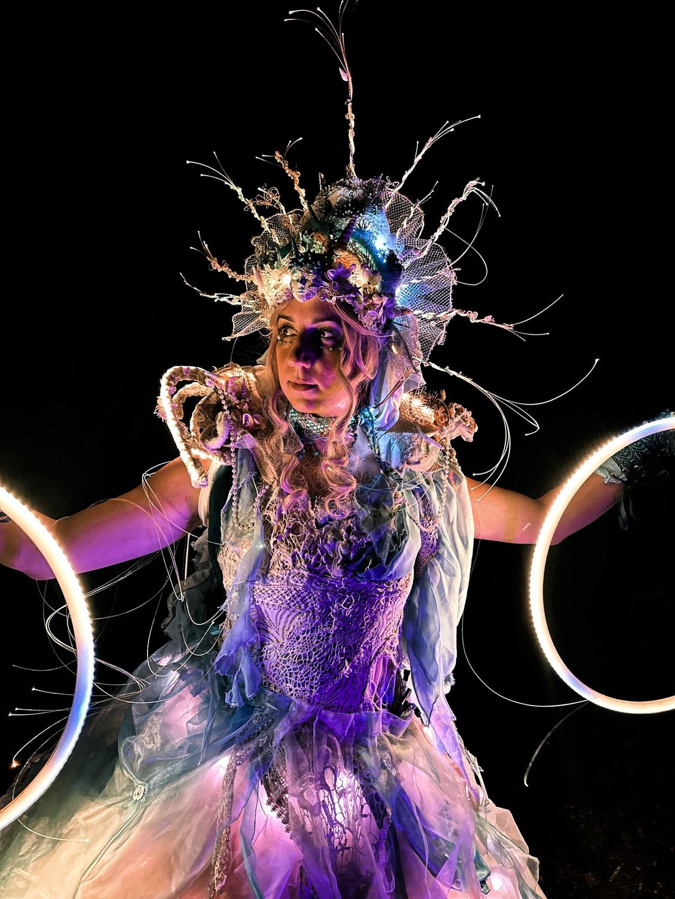
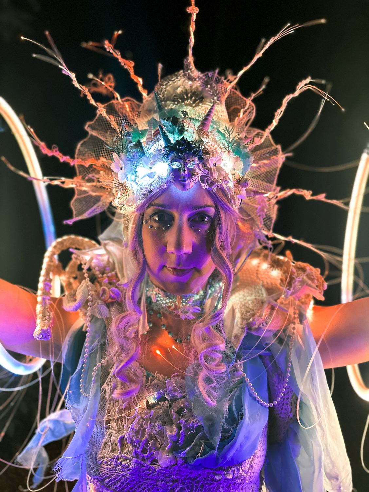

Spielt Nesaia live Musik?
Ja — bei Tageslicht trägt sie ihr Akkordeon und spielt live, während sie zwischen den Gästen wandelt: Seemannslieder, leise Melodien, ganz wie es zum Ort passt.
Eine Nereide zwischen Wald und Wasser, zwischen Meer und Luft.

Nesaia ist eine Nereide, eine der fünfzig Töchter des alten Meeresgottes Nereus. Jede Welle, die an eine Küste rollt, flüstert von ihren Schwestern; jede Perle, die aus einer Muschel schimmert, birgt ihren Glanz.
Die Paläste aus lebenden Korallen, das Perlmutt, die Bernsteinwege und die Kristalle mit ihrem sanften, nie endenden Licht hat sie hinter sich gelassen und sich die Welt dazwischen erwählt: zwischen Wald und Wasser, zwischen Meer und Luft. Sie lauscht den Elementen, und sie antwortet ihnen. Am Hafen gibt ihr Akkordeon die alten Seemannslieder wieder, am Flussufer werden die Melodien leise und sehnsuchtsvoll.
Bricht die Nacht herein, schwirren ihre Glühwürmchen um sie, kleine Glücksbringer für alle, denen sie gewogen ist. Es heißt, so mancher Seefahrer habe sich ihretwegen verirrt — und so mancher wieder heimgefunden.





Ja — bei Tageslicht trägt sie ihr Akkordeon und spielt live, während sie zwischen den Gästen wandelt: Seemannslieder, leise Melodien, ganz wie es zum Ort passt.
Sie wechselt in die leuchtende Version des Kostüms: ein leuchtendes Kleid und Leucht-Hoops, die die Figur in die Nacht tragen.
Lucina ist die Lichtbringerin — anmutig zieht sie durch die Menge und bringt Geschenke und Staunen für alle, die an Magie und Träume glauben.
Zwei Glasfaser-Wesen, die wie Laternen aus der Tiefsee durch den Raum schweben — das eleganteste der LED-Sets, in mehreren Runden von 20 bis 30 Minuten.
Varieté und Vintage-Zirkus, Goldene Zwanziger, Candyland, maritim, floral, Märchen und Fantasy — solo oder im größeren Ensemble.